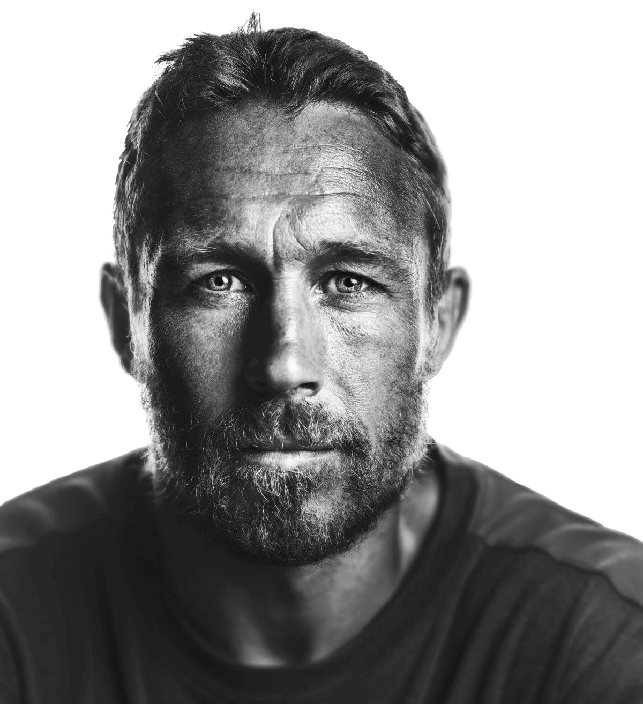

Wilkinson.
10
The greatest 10 of all time.
History
Stats
Legacy

World Famous
Today, 16 years on, Jonny Wilkinson’s drop for World Cup glory remains the greatest moment in the history of the Rugby World Cup. The iconic kick, stuck with his weaker right foot, in the final seconds of extra time clinched a famous 20-17 victory for England against Australia during the final in Sydney in 2003.
0
Years
0
Caps
0
Points
Jonny played club rugby for twelve seasons in the English Premiership with Newcastle Falcons. In 2009 he moved to Toulon, where he won two Heineken Cups and one Top 14 championship in five seasons.
He came back from several injuries and was part of the England team which reached the final of the 2007 World Cup. He toured twice with the British and Irish Lions, in 2001 to Australia and 2005 to New Zealand, winning 6 caps.
Where is he now?
No.1 Living
No.1 is a healthy eating/drinking company conceived by Jonny Wilkinson, using his experiences and a will to share with people a way to start living from the inside out. Their ethos is to "focus on the potential inside each and every one of us to feel more balanced and in control of how we choose to live our lives."

Foundation
A charitable foundation created by Jonny Wilkinson to positively impact mental health, reduce mental health stigma, and help people realise their potential and flourish. Their aim is to address the mental health stigma and to develop a programme to raise the profile of mental health in young people in positive and engaging ways and increase their mental resilience.
Fineside
Jonny Wilkinson and his brother Mark started Fineside in 2010. Now firmly established, Fineside puts a fashion stamp onto movement-focused clothing.